| env_grass_tuft_01
13 x 13 px
scatter ｜ 显示放大 30x | the tuft IS 0.40 m (REAL_SIZE). 13 px is what 0.40 m is at 32 px/m |
| env_flower_daisy_01
14 x 14 px
scatter ｜ 显示放大 28x | bottom-centre pivot, sits ON the ground |
 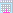 | env_rock_small_01
13 x 13 px
scatter ｜ 显示放大 30x | a rock is [1,1] in the rules — ONE thing, not a patch |
 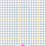 | tree_oak_trunk
77 x 77 px
tree layer ｜ 显示放大 5x | TRUNK ONLY — leaves go in the three files below. Bottom-centre pivot |
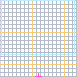 | tree_oak_leaves_back
77 x 77 px
tree layer ｜ 显示放大 5x | LAYER 1 of 3, drawn BEHIND the trunk. Same canvas as the trunk, so the three line up |
 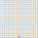 | tree_oak_leaves_mid
77 x 77 px
tree layer ｜ 显示放大 5x | LAYER 2 of 3 — around and over the trunk. Its sway is out of phase with the other two |
 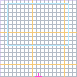 | tree_oak_leaves_front
77 x 77 px
tree layer ｜ 显示放大 5x | LAYER 3 of 3, in FRONT of everything. See the README for what the code still needs before three layers can be drawn |
 | char_idle
64 x 112 px
character ｜ 显示放大 3x | 2 frames. /______/idle.png |
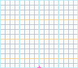 | char_walk
128 x 112 px
character ｜ 显示放大 3x | 4 frames. The frame order IS the walk cycle |
 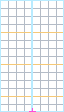 | char_work
64 x 112 px
character ｜ 显示放大 3x | 2 frames |
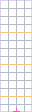 | char_sit
32 x 112 px
character ｜ 显示放大 3x | 1 frame — sit is one pose |
  | char_sleep
64 x 112 px
character ｜ 显示放大 3x | 2 frames |
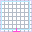 | item_icon
32 x 32 px
item ｜ 显示放大 12x | NOT LOADED YET — the bag draws item NAMES in a cell. An icon pass changes one widget |
 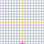 | material_wall_64
64 x 64 px
material ｜ 显示放大 6x | ONE TILE = 2 m of wall face (uv1_scale is size/2). Serves every material row: wood / stone / brick / plaster — they differ by palette, not by canvas. MUST TILE — the edges have to meet |
| material_codegen_16
16 x 16 px
material ｜ 显示放大 25x | what `CozyMaterials.get_texture` generates TODAY. 16 px over a 2 m tile is 8 px/m — 4x coarser than the profile. One-line fix (16 -> 64), not made yet |
 | material_ground_64
64 x 64 px
material ｜ 显示放大 6x | 2 m of ground. NOT CONSUMED YET: terrain is COLOURED per cell, never textured — this is for the day it is |
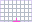 | furniture_chest
32 x 22 px
furniture ｜ 显示放大 12x | chest face 1.00 x 0.70 m. ONE TEXTURE IS STRETCHED OVER EVERY FACE (uv_scale = 1), so this is a compromise between the top and the sides |
| furniture_bed
64 x 16 px
furniture ｜ 显示放大 6x | bed face 2.00 x 0.50 m |
| furniture_chair
19 x 16 px
furniture ｜ 显示放大 21x | chair face 0.60 x 0.50 m |
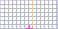 | furniture_table
58 x 29 px
furniture ｜ 显示放大 6x | research table face 1.80 x 0.90 m |